산업안전산업기사 (2012-08-26 기출문제)
1과목: 산업안전관리론
1. 다음 중 생체리듬(Biorhythm)의 종류에 속하지 않는 것은?
- 육체적 리듬
- 지성적 리듬
- 감성적 리듬
- 정서적 리듬
(정답률: 51%)

2. 다음 중 어떤 기능이나 작업과정을 학습시키기 위해 필요로 하는 분명한 동작을 제시하는 교육방법은?
- 시범식 교육
- 토의식 교육
- 강의식 교육
- 반복식 교육
(정답률: 86%)
3. 다음 중 산업안전보건법령상 안전보건관리규정에 포함 되어 있지 않는 내용은? (단, 기타 안전보건관리에 관한 사항은 제외한다.)
- 작업자 선발에 관한 사항
- 안전보건교육에 관한 사항
- 사고조사 및 대책수립에 관한 사항
- 작업장 보건관리에 관한 사항
(정답률: 83%)
4. 어느 공장의 연평균근로자가 180명이고, 1년간 발생한 사상자의 수가 6명이 발생했다면 연천인율은 약 얼마인가? (단, 근로자는 하루 8시간씩 연간 300일을 근무한다.)
- 13.89
- 33.33
- 43.69
- 12.79
(정답률: 72%)
5. 다음 중 리더십(Leadership) 과정에 있어 구성요소와의 함수관계를 의미하는 “L=f(l, f1, s)” 의 용어를 잘못 나타낸 것은?
- f : 함수(function)
- l : 청취(listening)
- f1 : 멤버(follower)
- s : 상황요인(situational variables)
(정답률: 70%)
6. 사고예방대책 기본원칙 5단계 중 2단계인 “사실의 발견”과 관계가 가장 먼 것은?
- 자료수집
- 위험확인
- 점검·검사 및 조사 실시
- 안전관리규정 제정
(정답률: 81%)
7. 안전한 방법에 대한 지식을 가지고 있으며 또 그것을 해낼 수 있는 능력을 가지고 있는 사람이 불안전 행위를 범해서 재해를 일으키는 경우가 있는데 다음중 이에 해당되지 않는 경우는?
- 무의식으로 하는 경우
- 사태의 파악에 잘못이 있을 때
- 좋지 않다는 것을 의식하면서 행위를 할 경우
- 작업량이 능력에 비하여 과다한 경우
(정답률: 65%)
8. 다음 중 TBM(Tool Box Meeting) 방법에 관한 설명으로 옳지 않은 것은?
- 단시간 통상 작업시간 전, 후 10분 정도 시간으로 미팅한다.
- 토의는 10인 이상에서 20인 단위 중규모가 모여서 한다.
- 작업개시 전 작업 장소에서 원을 만들어서 한다.
- 근로자 모두가 말하고 스스로 생각하고 “이렇게 하자”라고 합의한 내용이 되어야 한다.
(정답률: 85%)
9. 다음 중 인간의 적응기제(適應機劑)에 포함되지 않는 것은?
- 갈등(conflict)
- 억압(repression)
- 공격(aggression)
- 합리화(rationalization)
(정답률: 58%)
10. 다음 중 일반적인 근로자의 안전교육 기본 방향과 가장 거리가 먼 것은?
- 안전의식 향상을 위한 교육
- 사고사례 중심의 안전 교육
- 재해조사 중심의 교육
- 표준안전 작업을 위한 교육
(정답률: 81%)
11. 인간의 행동특성 중 주의(attention)의 일점집중현상에 대한 대책으로 가장 적절한 것은?
- 적성배치
- 카운슬링
- 위험예지훈련
- 작업환경 개선
(정답률: 57%)
12. 다음 중 산업안전보건법상 사업 내 안전·보건 교육 과정의 종류에 해당되지 않는 것은?
- 정기교육
- 안전관리자 신규교육
- 건설업 기초안전·보건교육
- 작업내용 변경시 교육
(정답률: 70%)
13. 재해예방의 4원칙 중 ‘대책선정의 원칙’에 대한 설명으로 옳은 것은?
- 재해의 발생은 반드시 그 원인이 존재한다.
- 손실은 우연히 일어나므로 반드시 예방이 가능하다.
- 재해는 원칙적으로 원인만 제거되면 예방이 가능하다.
- 재해예방을 위한 가능한 안전대책은 반드시 존재한다.
(정답률: 79%)
14. 다음 중 방진마스크 선택시 주의사항으로 틀린 것은?
- 포집율이 좋아야 한다.
- 흡기저항 상승률이 높아야 한다.
- 시야가 넓을수록 좋다.
- 안면부에 밀착성이 좋아야 한다.
(정답률: 70%)
15. 매슬로우(Maslow. A.H)의 욕구 5단계 중 자신의 잠재력을 발휘하여 자기가 하고 싶은 일을 실현하는 욕구는 어느 단계인가?
- 생리적 욕구
- 안전의 욕구
- 존경의 욕구
- 자아실현의 욕구
(정답률: 91%)
16. 안전점검 방법에서 일상점검의 시기로 적당하지 않은 것은?
- 작업 전
- 작업 후
- 사고발생 직후
- 작업 중
(정답률: 78%)
17. 재해손실비용 중 직접비에 해당되는 것은?
- 인적손실
- 생산손실
- 산재보상비
- 특수손실
(정답률: 79%)
18. 산업안전보건법령상 안전·보건표지의 색채 중 문자 및 빨간색 또는 노란색에 대한 보조색의 용도로 사용되는 색채는?
- 검정색
- 흰색
- 녹색
- 파란색
(정답률: 77%)
19. 다음 중 산업안전보건법령상 관리감독자 정기안전·보건교육의 내용에 포함되지 않는 것은? (단, 기타 산업안전보건법 및 일반관리에 관한 사항은 제외한다.)
- 인원활용 및 생산성 향상에 관한 사항
- 작업공정의 유해·위험과 재해 예방대책에 관한 사항
- 표준안전작업방법 및 지도 요령에 관한 사항
- 유해·위험 작업환경 관리에 관한 사항
(정답률: 64%)
20. 다음 중 산업 재해의 발생 유형으로 볼 수 없는 것은?
- 지그재그형
- 집중형
- 연쇄형
- 복합형
(정답률: 82%)
2과목: 인간공학 및 시스템안전공학
21. 그림에 있는 조종구(ball control)와 같이 상당한 회전운동을 하는 조종장치가 선형표시장치를 움직일때는 L을 반경(지레의 길이), a를 조정장치가 움직인 각도라 할 때 조종표시 장치의 이동비율(control display ratio)을 나타낸 것은?
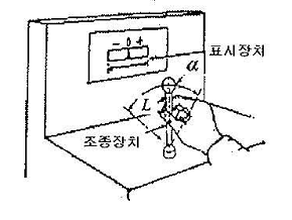
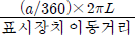
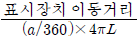
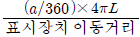
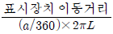
(정답률: 79%)
22. 다음 중 카메라의 필름에 해당하는 우리 눈의 부위는?
- 망막
- 수정체
- 동공
- 각막
(정답률: 67%)
23. 다음 중 예방보전을 수행함으로써 기대되는 이점이 아닌 것은?
- 정지시간 감소로 유휴손실 감소
- 신뢰도 향상으로 인한 제조원가의 감소
- 납기엄수에 따른 신용 및 판매기회 증대
- 돌발고장 및 보전비의 감소
(정답률: 37%)
24. 다음 중 인간-기계시스템의 설계원칙으로 틀린 것은?
- 양립성이 적으면서 적을수록 정보처리에 재코드화 과정은 적어진다.
- 사용빈도, 사용순서, 기능에 따라 배치가 이루어져야 한다.
- 인간의 기계적 성능에 부합되도록 설계해야 한다.
- 인체특성에 적합해야 한다.
(정답률: 65%)
25. 다음 중 활동의 내용마다 “우·양·가·불가”로 평가 하고 이 평가내용을 합하여 다시 종합적으로 정규화하여 평가하는 안전성 평가 기법은?
- 계층적 기법
- 일관성 검정법
- 쌍대비교법
- 평점척도법
(정답률: 77%)
26. 다음 중 좌식 평면 작업대에서의 최대작업영역에 관한 설명으로 가장 적절한 것은?
- 윗팔과 손목을 중립자세로 유지한 채 손으로 원을 그릴 때 부채꼴 원호의 내부 영역
- 어깨로부터 팔을 펴서 어깨를 축으로 하여 수평면상에 원을 그릴 때 부채꼴 원호의 내부지역
- 자연스러운 자세로 위팔을 몸통에 붙인 채 손으로 수평면상에 원을 그릴 때 부채꼴 원호의 내부지역
- 각 손의 정상작업영역 경계선이 작업자의 정면에서 교차되는 공통영역
(정답률: 76%)
27. 런닝벨트(treadmill) 위를 일정한 속도로 걷는 사람의 배기가스를 5분간 수집한 표본을 가스성분 분석기로 조사한 결과 산소 16%, 이산화탄소 4%로 나타났다. 배기가스 전부를 가스미터에 통과시킨 결과 배기량이 90L이었다면 분당 산소 소비량과 에너지 가(價)는 약 얼마인가?
- 산소 소비량 : 0.95L/분, 에너지 가(價) : 4.75kcal/분
- 산소 소비량 : 0.97L/분, 에너지 가(價) : 4.80kcal/분
- 산소 소비량 : 0.95L/분, 에너지 가(價) : 4.85kcal/분
- 산소 소비량 : 0.97L/분, 에너지 가(價) : 4.90kcal/분
(정답률: 47%)
28. 다음 중 반복되는 사건이 많이 있는 경우에 FTA의 최소 컷셋을 구하는 알고리즘이 아닌 것은?
- Boolean Algorithm
- Monte Carlo Algorithm
- MOCUS Algorithm
- Limnios & Ziani Algorithm
(정답률: 84%)
29. 어뢰를 신속하게 탐지하는 경보시스템은 영구적이며, 경계나 부주의로 광점을 탐지하지 못하는 조작자 실수율은 0.001t/시간이고, 균질(homogeneous)하다. 또한, 조작자는 15분마다 스위치를 작동해야 하는데 인간실수확률(HEP)이 0.01인 경우에 2시간에서 3시간 사이에 인간-기계시스템의 신뢰도는 약 얼마인가?
- 94.96%
- 95.96%
- 96.96%
- 97.96%
(정답률: 38%)
30. 다음 내용에 해당하는 양립성의 종류는?
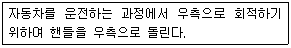
- 개념의 양립성
- 운동의 양립성
- 공간의 양립성
- 감성의 양립성
(정답률: 75%)
31. 다음 중 인간 에러(human error)를 예방하기 위한 기법과 가장 거리가 먼 것은?
- 직업상황의 개선
- 위급사건기법의 적용
- 작업자의 변경
- 시스템의 영향 감소
(정답률: 38%)
32. 다음 그림과 같은 시스템의 신뢰도는 약 얼마인가? (단, p는 부품 i의 신뢰도이다.)
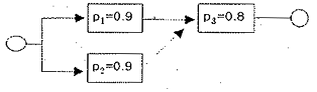
- 97.2%
- 94.4%
- 86.4%
- 79.2%
(정답률: 56%)
33. 다음 중 음성 통신 시스템의 구성 요소가 아닌 것은?
- Noise
- Blackboard
- Message
- speaker
(정답률: 73%)
34. FT의 기호 중 더 이상 분석할 수 없거나 또는 분석할 필요가 없는 생략사상을 나타내는 기호는?
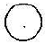
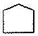
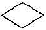
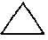
(정답률: 71%)
35. 다음 <보기>의 (ㄱ)과 (ㄴ)에 해당하는 내용은?
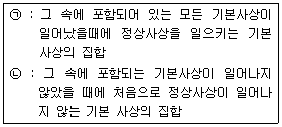
- (ㄱ) Path set, (ㄴ) Cut set
- (ㄱ) Cut set, (ㄴ) Path set
- (ㄱ) AND, (ㄴ) OR
- (ㄱ) OR, (ㄴ) AND
(정답률: 77%)
36. 다음 중 실내면의 추천반사율이 높은 것에서부터 낮은 순으로 올바르게 배열된 것은?
- 바닥 > 가구 > 벽 > 천장
- 바닥 > 벽 > 가구 > 천장
- 천장 > 가구 > 벽 > 바닥
- 천장 > 벽 > 가구 > 바닥
(정답률: 73%)
37. 인간공학에 있어 시스템 설계 과정의 주요단계를 다음과 같이 6단계로 구분하였을 때 다음 중 올바른 순서로 나열한 것은?
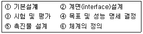
- ① → ② → ⑥ → ④ → ⑤ → ③
- ② → ① → ⑥ → ④ → ⑤ → ③
- ④ → ⑥ → ① → ② → ⑤ → ③
- ⑥ → ① → ② → ④ → ⑤ → ③
(정답률: 70%)
38. 다음 중 소음(noise)에 대한 정의로 가장 적절한 것은?
- 큰 소리(loud sound)
- 원치 않은 소리(unwanted sound)
- 정신이나 신경을 자극하는 소리(mental and nervous sound)
- 청각을 자극하는 소리(auditory sense annoying sound)
(정답률: 62%)
39. 다음 중 열압박 지수(HSI : Heat Stress Index)에서 고려하고 있지 않은 항목은?
- 공기 속도
- 습도
- 압력
- 온도
(정답률: 46%)
40. 다음 중 안전성평가 5가지 단계 중 준비된 기초자료를 항목별로 구분하여 관계법규와 비교, 위반사항을 검토하고 세부적으로 여러 항목의 가부를 살피는 단계는?
- 정보의 확보 및 검토
- 재해자료를 통한 재평가
- 정량적 평가
- 정성적 평가
(정답률: 48%)
3과목: 기계위험방지기술
41. 정(chisel) 작업의 일반적인 안전수칙에서 틀린 것은?
- 따내기 및 칩이 튀는 가공에서는 보안경을 착용하여야 한다.
- 절단 작업 시 절단된 끝이 튀는 것을 조심하여야 한다.
- 작업을 시작할 때는 가급적 정을 세게 타격하고 점차 힘을 줄여간다.
- 절단이 끝날 무렵에는 정을 세게 타격해서는 안 된다.
(정답률: 87%)
42. 왕복운동을 하는 기계의 운동부와 움직임 없는 고정부 사이에서 형성되는 위험점은?
- 협착점
- 끼임점
- 절단점
- 물림점
(정답률: 75%)
43. 프레스 광전자식 방호장치의 광선에 신체의 일부가 감지된 후로부터 급정지기구 작동시까지의 시간이 30 ms이고, 급정지기구의 작동 직후로부터 프레스기가 정지될 때까지의 시간이 20 ms라면 광축의 최소 설치 거리는?
- 75mm
- 80mm
- 100mm
- 150mm
(정답률: 67%)
44. 아세틸렌 용접장치에 설치하여야 하는 방호장치는?
- 안전기
- 과부하장치
- 덮개
- 파열판
(정답률: 78%)
45. 선반작업의 안전수칙으로 적합하지 않은 것은?
- 작업 중 장갑을 착용하여서는 안 된다.
- 공작물의 측정은 기계를 정지시킨 후 실시한다.
- 사용 중인 공구는 선반의 베드 위에 올려놓는다.
- 가공물의 길이가 지름의 12배 이상이면 방전구를 사용한다.
(정답률: 81%)
46. 안전한 컨베이어 작업을 위한 사항으로 적합하지 않은 것은?
- 컨베이어 위로 건널다리를 설치하였다.
- 운전 중인 컨베이어에는 근로자를 탑승시켜서는 안된다.
- 작업 중 급정지를 방지하기 위하여 비상정지장치는 해체하여야 한다.
- 트롤리 컨베이어에서 트롤리와 체인을 상호 확실하게 연결시켜야 한다.
(정답률: 84%)
47. 다음 중 아세틸렌 용접장치에서 역화의 발생 원인과 가장 관계가 먼 것은?
- 압력조정기가 고장으로 작동이 불량할 때
- 수봉식 안전기가 지면에 대해 수직으로 설치될 때
- 토치의 성능이 좋지 않을 때
- 탑이 과열 되었을 때
(정답률: 72%)
48. 다음 중 승강기를 구성하고 있는 장치가 아닌 것은?
- 선회장치
- 권상장치
- 가이드레일
- 완충기
(정답률: 57%)
49. 일반연삭작업 등에 사용하는 것을 목적으로 하는 탁상용 연삭기의 덮개의 노출 각도로 옳은 것은?
- 30° 이내
- 45° 이내
- 125° 이내
- 150° 이내
(정답률: 64%)
50. 산업안전보건법령상 고속회전체의 회전시험을 하는 경우 미리 회전축의 재질 및 형상 등에 상응하는 종류의 비파괴검사를 해서 결함 유무(有無)를 확인하여야 하는 고속회전체 대상은?
- 회전축의 중량이 500kg을 초과하고, 원주속도가 15m/s 이상인 것
- 회전축의 중량이 1톤을 초과하고, 원주속도가 30m/s 이상인 것
- 회전축의 중량이 500kg을 초과하고, 원주속도가 60m/s 이상인 것
- 회전축의 중량이 1톤을 초과하고, 원주속도가 120m/s 이상인 것
(정답률: 74%)
51. 기계설비의 안전조건 중 외관의 안전화에 해당하는 조치는?
- 고장발생을 최소화하기 위해 정기점검을 실시하였다.
- 전압강하, 정전시의 오동작을 방지하기 위하여 제어장치를 설치하였다.
- 기계의 예리한 돌출부 등에 안전 덮개를 설치하였다.
- 강도를 고려하여 안전율을 최대로 고려하여 설비를 설계하였다.
(정답률: 82%)
52. 다음 중 산업안전보건법령상 크레인의 방호장치에 해당하지 않는 것은?
- 권과방지장치
- 주위감시장치
- 비상정지장치
- 과부하방지장치
(정답률: 71%)
53. 다음 중 드릴링 머신(drilling machine)에서 구멍을 뚫는 작업시 가장 위험한 시점은?
- 드릴작업의 끝
- 드릴 작업의 처음
- 드릴이 공작물을 관통한 후
- 드릴이 공작물을 관통하기 전
(정답률: 67%)
54. 고리걸이용 와이어로프의 절단하중이 4 ton일 때, 이 로프의 최대사용하중은 얼마인가? (단, 안전계수는 5 이다.)
- 400 kgf
- 500 kgf
- 800 kgf
- 2000 kgf
(정답률: 67%)
55. 프레스의 양수조작식 방호장치에서 양쪽버튼의 작동시간차이는 최대 얼마 이내일 때 프레스가 동작되도록 해야 하는가?
- 0.1초
- 0.5초
- 1.0초
- 1.5초
(정답률: 74%)
56. 기계의 원동기, 회전축 및 체인 등 근로자에게 위험을 미칠 우려가 있는 부위에 설치해야 하는 위험방지 장치가 아닌 것은?
- 덮개
- 건널다리
- 클러치
- 슬리브
(정답률: 47%)
57. 개구부에서 회전하는 롤러의 위험점까지 최단거리가 60mm일 때 개구부 간격은?
- 10mm
- 12mm
- 13mm
- 15mm
(정답률: 63%)
58. 다음 중 연삭숫돌 구성의 3요소가 아닌 것은?
- 조직
- 입자
- 기공
- 결합제
(정답률: 43%)
59. 기계설비 방호 가드의 설치조건으로 틀린 것은?
- 충분한 강도를 유지할 것
- 구조가 단순하고 위험점 방호가 확실할 것
- 개구부(틈새)의 간격은 임의로 조정이 가능할 것
- 작업, 점검, 주유시 장애가 없을 것
(정답률: 86%)
60. 압력용기에서 과압으로 인한 폭발을 방지하기 위해 설치하는 압력방출장치는?
- 체크밸브
- 스톱밸브
- 안전밸브
- 비상밸브
(정답률: 67%)
4과목: 전기 및 화학설비위험방지기술
61. 다음 중 방폭전기설비가 설치되는 표준환경조건에 해당되지 않는 것은?
- 주변온도 : -20℃ ~ +40℃
- 표고 : 1000m 이하
- 상대습도 : 20 ~ 60%
- 전기설비에 특별한 고려를 필요로 하는 정도의 공해, 부식성가스, 진동 등이 존재하지 않는 장소
(정답률: 65%)
62. 모터에 걸리는 대지전압이 50V이고 인체저항이 5000 Ω일 경우 인체에 흐르는 전류는 몇 mA 인가?
- 10mA
- 20mA
- 30mA
- 40mA
(정답률: 73%)
63. 다음 중 분말소화제의 조성과 관계가 없는 것은?
- 중탄산나트륨
- T.M.B
- 탄산마그네슘
- 인산칼슘
(정답률: 64%)
64. 다음 중 파이프 등에 유체가 흐를 때 발생하는 유동대전에 가장 큰 영향을 미치는 요인은?
- 유체의 이동거리
- 유체의 점도
- 유체의 속도
- 유체의 양
(정답률: 80%)
65. 다음 중 이상적인 피뢰기가 가져야 할 성능이 아닌 것은?
- 제한전압이 높을 것
- 방전개시전압이 낮을 것
- 뇌전류 방전능력이 높을 것
- 속류차단을 빠르게 할 것
(정답률: 52%)
66. 다음 중 산업안전보건법령상 충전전로의 선간전압이 37kV 초과 88kV 이하일 때 충전선로에 대한 접근 한계거리로 옳은 것은?
- 60cm
- 90cm
- 110cm
- 130cm
(정답률: 47%)
67. 다음 중 중합폭발의 유해위험요인(hazard)이 있는 것은?
- 아세틸렌
- 시안화수소
- 산화에틸렌
- 염소산칼륨
(정답률: 39%)
68. 어떤 혼합가스의 구성성분이 공기는 50%, 수소는 20%, 아세틸렌은 30%인 경우 이 혼합가스의 폭발하 한계는? (단, 폭발하한값이 수소는 4%, 아세틸렌은 2.5% 이다.)
- 2.50%
- 2.94%
- 4.76%
- 5.88%
(정답률: 62%)
69. 다음 중 습윤한 장소의 배선공사에 있어 유의하여야 할 사항으로 틀린 것은?
- 애자사용 배선에 사용하는 애자는 400V 미만인 경우 판 애자 이상의 크기를 사용한다.
- 이동전선을 사용하는 경우 단면적 0.75mm2 이상의 코드 또는 캡타이어 케이블 공사를 한다.
- 배관공사인 경우 습기나 물기가 침입하지 않도록 처치한다.
- 전선의 접속개소는 가능한 작게 하고 전선접속 부분에는 절연처리 한다.
(정답률: 56%)
70. 다음 중 반응기를 구조형식에 의하여 분류할 때 이에 해당하지 않는 것은?
- 탑형
- 회분식
- 교반조형
- 유동층형
(정답률: 57%)
71. 다음 중 전기기계ㆍ기구의 접지에 관한 설명으로 틀린 것은?
- 접지 저항이 크면 클수록 좋다.
- 접지봉이나 접지극은 도전율이 좋아야 한다.
- 접지판은 동판이나 아연판 등을 사용한다.
- 접지극 대신 가스관을 사용해서는 안 된다.
(정답률: 67%)
72. 인체가 전격을 받았을 때 가장 위험한 경우는 심실세동이 발생하는 경우이다. 정현파 교류에 있어 인체의 전기 저항이 500Ω일 경우 다음 중 심실세동을 일으키는 전기 에너지의 한계로 가장 적합한 것은?
- 18.0 ~ 30.0 J
- 15.0 ~ 27.0 J
- 6.5 ~ 17.0 J
- 2.5 ~ 8.0 J
(정답률: 46%)
73. 다음 중 인화성 액체를 소화할 때 내알콜포를 사용해야 하는 물질은?
- 특수인화물
- 소포성의 수용성액체
- 인화점이 영하 이하의 인화성물질
- 발생하는 증기가 공기보다 무거운 인화성액체
(정답률: 60%)
74. 다음 중 고압활선작업에 필요한 보호구에 해당하지 않는 것은?
- 절연대
- 절연장갑
- AE형 안전모
- 절연장화
(정답률: 72%)
75. 산업안전보건법령에 따라 사업주는 공정안전보고서의 심사결과를 송부 받은 경우 몇 년간 보존하여야 하는가?
- 2년
- 3년
- 5년
- 10년
(정답률: 67%)
76. 다음 중 배관용 부품에 있어 사용되는 성격이 다른 것은?
- 엘보(elbow)
- 티이(T)
- 크로스(cross)
- 밸브(valve)
(정답률: 77%)
77. 다음 중 황린에 대한 설명으로 옳은 것은?
- 주수에 의한 냉각소화는 황화수소를 발생시키므로 사용을 금한다.
- 황린은 자연발화하므로 물 속에 보관한다.
- 황린은 황과 인의 화합물이다.
- 독성 및 부식성이 없다.
(정답률: 80%)
78. 다음 중 산업안전보건법령상 방폭전기설비의 위험장소 분류에 있어 보통 상태에서 위험분위기를 발생할 염려가 있는 장소로서 폭발성 가스가 보통상태에서 집적되어 위험농도로 될 염려가 있는 장소를 몇 종 장소라 하는가?
- 0종 장소
- 1종 장소
- 2종 장소
- 3종 장소
(정답률: 70%)
79. 화재발생시 발생되는 연소 생성물 중 독성이 높은 것부터 낮은 순으로 올바르게 나열한 것은?
- 염화수소 > 포스겐 > CO > CO2
- CO > 포스겐 > 염화수소 > CO2
- CO2 > CO > 포스겐 > 염화수소
- 포스겐 > 염화수소 > CO > CO2
(정답률: 57%)
80. 다음 중 화재 방지 대책에 대한 내용으로 틀린 것은?
- 예방대책 - 점화원 관리
- 국한대책 - 안전장치 설치
- 소화대책 - 건물설비의 불연화
- 피난대책 - 인명이나 재산 손실보호
(정답률: 58%)
5과목: 건설안전기술
81. 철골공사에서 부재의 건립용 기계로 거리가 먼 것 은?
- 타워크레인
- 가이데릭
- 삼각데릭
- 항타기
(정답률: 77%)
82. 철근 콘크리트 해체용 장비가 아닌 것은?
- 철 해머
- 압쇄기
- 램머
- 핸드브레이커
(정답률: 56%)
83. 연면적 6000m2인 호텔공사의 유해위험방지계획서 확인검사 주기는?
- 1개월
- 3개월
- 5개월
- 6개월
(정답률: 64%)
84. 불특정지역을 계속적으로 운반할 경우 사용해야 하는 운반기계는?
- 컨베이어
- 크레인
- 화물차
- 기차
(정답률: 74%)
85. 하루의 평균기온이 4℃ 이하로 될 것이 예상되는 기상조건에서 낮에도 콘크리트가 동결의 우려가 있는 경우에 사용되는 콘크리트는?
- 고강도 콘크리트
- 경량 콘크리트
- 서중 콘크리트
- 한중 콘크리트
(정답률: 81%)
86. 이동식 비계의 조립에 대한 유의사항으로 옳지 않은 것은?
- 제동장치를 설치
- 승강용 사다리를 견고하게 부착
- 비계의 최대높이는 밑변 최대 폭의 4배 이하
- 최상층 및 5층 이내마다 수평재를 설치
(정답률: 50%)
87. 다음 건설기계 중 360° 회전작업이 불가능한 것은?
- 타워 크레인
- 타이어 크레인
- 가이 데릭
- 삼각 데릭
(정답률: 74%)
88. 콘크리트 강도에 가장 큰 영향을 주는 것은?
- 골재의 입도
- 시멘트 량
- 배합방법
- 물 ㆍ 시멘트 비
(정답률: 69%)
89. 다음 중 흙막이 공법에 해당하지 않는 것은?
- Soil Cement Wall
- Cast In concrete Pile
- 지하연속벽공법
- Sand Compaction Pile
(정답률: 43%)
90. 와이어로프 안전계수 중 화물의 하중을 직접 지지하는 경우에 안전계수 기준으로 옳은 것은?
- 3 이상
- 4 이상
- 5 이상
- 6 이상
(정답률: 82%)
91. 콘크리트 타설시 거푸집의 측압에 영향을 미치는 인자에 대한 설명으로 옳지 않은 것은?
- 부재의 단면이 클수록 크다.
- 슬럼프가 작을수록 크다.
- 거푸집 속의 콘크리트 온도가 낮을수록 크다.
- 붓는 속도가 빠를수록 크다.
(정답률: 60%)
92. 산업안전보건법령상 양중 장비에 대한 다음 설명중 옳지 않은 것은?
- 승용승강기란 사람의 수직 수송을 주목적으로 한다.
- 화물용승강기는 화물의 수송을 주목적으로 하며 사람의 탑승은 원칙적으로 금지된다.
- 리프트는 동력을 이용하여 화물을 운반하는 기계설비로서 사람의 탑승은 금지된다.
- 크레인은 중량물을 상하 및 좌우 운반하는 기계로서 사람의 운반은 금지된다.
(정답률: 67%)
93. 달비계의 발판위에 설치하는 발끝막이판의 높이는 몇 cm이상 설치하여야 하는가?
- 10cm 이상
- 8cm 이상
- 6cm 이상
- 5cm 이상
(정답률: 73%)
94. 강변 옆에서 아파트 공사를 하기 위해 흙막이를 설치하고 지하공사 중에 바닥에서 물이 솟아오르면서 모래 등이 부풀어 올라 흙막이가 무너졌다. 어떤 현상에 의해 사고가 발생 하였는가?
- 보일링(boiling) 파괴
- 히빙(heaving) 파괴
- 파이핑(piping) 파괴
- 지하수 침하 파괴
(정답률: 52%)
95. 유한사면에서 사면기울기가 비교적 완만한 점성토에서 주로 발생되는 사면파괴의 형태는?
- 저부파괴
- 사면선단파괴
- 사면내파괴
- 국부전단파괴
(정답률: 49%)
96. 건설업 산업안전보건관리비로 사용할 수 없는 것은?
- 개인보호구 및 안전장구 구입비용
- 추락방지용 안전시설 등 안전시설 비용
- 경비원, 교통정리원, 자재정리원의 인건비
- 전담안전관리자의 인건비 및 업무수당
(정답률: 74%)
97. 다음의 건설공사 현장 중에서 재해예방 기술지도를 받아야 하는 대상공사에 해당하지 않는 것은?
- 공사금액 5억원인 건축공사
- 공사금액 140억원인 토목공사
- 공사금액 5천만원인 전기공사
- 공사금액 2억원인 정보통신공사
(정답률: 61%)
98. 추락재해를 방지하기 위한 안전대책내용 중 옳지 않은 것은?
- 높이가 2m를 초과하는 장소에는 승강설비를 설치 한다.
- 사다리식 통로의 폭은 30cm 이상으로 한다.
- 사다리식 통로의 기울기는 85° 이상으로 한다.
- 슬레이트 지붕에서 발이 빠지는 등 추락 위험이 있을 경우 폭 30cm 이상의 발판을 설치한다.
(정답률: 75%)
99. 다음 중 추락재해의 발생을 막기 위한 대책이라고 볼 수 없는 것은?
- 추락방지망의 설치
- 안전대의 착용
- 투하설비의 설치
- 안전난간의 설치
(정답률: 82%)
100. 다음 중 통로의 설치 기준으로 옳지 않은 것은?
- 근로자가 안전하게 통행할 수 있도록 통로의 조명의 50 lux 이상으로 할 것
- 통로 면으로부터 높이 2m 이내에 장애물이 없도록 할 것
- 추락의 위험이 있는 곳에는 안전난간을 설치할 것
- 건설공사에 사용하는 높이 8m 이상인 비계다리는 7m 이내마다 계단참을 설치할 것
(정답률: 79%)
설명: 생체리듬은 육체적, 지성적, 감성적 요소를 포함하지만, 정서적 리듬은 생체적인 요소와는 직접적인 연관이 없기 때문에 생체리듬의 종류에 속하지 않습니다.